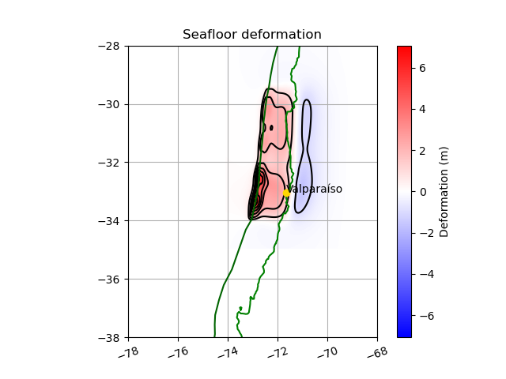

Note
Go to the end to download the full example code
Slip and deformation figure of a Stochastic generation
This example makes an 3d plot of Slip distribution :param X_array: Longitude grid :param Y_array: Latitude grid :param depth: Depth grid :param Slip: Slip grid :param filename: Optional, filename if you wanna save fig :return: Figure of Slip and deformation distribution

- 
import geostochpy
import matplotlib.pyplot as plt
import numpy as np
from geostochpy import modokada as mo
# shorelines
shorelines_file = geostochpy.get_data('pacific_shorelines_east_4min.npy')
shore = np.load(shorelines_file)
#
route_trench = geostochpy.get_data('trench-chile.txt')
# load trench
lonfosa, latfosa = geostochpy.load_trench(route_trench)
nx=18
ny=50
width=180
length=500
dx=width/nx
dy=length/ny
region=[-78,-68,-38,-28]
slabdep,slabdip,slabstrike,slabrake=geostochpy.load_files_slab2(zone='south_america',rake=True)
# Se realiza la falla a lo largo del trench, y se le da el valor más al norte de la falla.
#
# Luego, se deben tener las profundidades en cada subfalla, para ello se interpolan los datos de Slab2 con geostochpy.interp_slabtofault
north=-29.5
lons,lons_ep,lats,lats_ep=geostochpy.make_fault_alongtrench(lonfosa,latfosa,north, nx,ny,width,length)
[X_grid,Y_grid,dep,dip,strike,rake]=geostochpy.interp_slabtofault(lons,lats,nx,ny,slabdep,slabdip,slabstrike,slabrake)
# ##### Se crea la matriz de slips medios con geostochpy.matriz_media(mean,dep)
## Creation slip models
# mean matrix
Mw=9.0
media,rigidez=geostochpy.media_slip(Mw,dx*1000,dy*1000,dep)
leveque_taper=geostochpy.taper_LeVeque(dep,55000)
villarroel_taper=geostochpy.taper_except_trench_tukey(dep,alpha_dip=0.3,alpha_strike=0.3)
taper=leveque_taper*villarroel_taper
mu = geostochpy.matriz_medias_villarroel(media,taper)
# matriz de covarianza
C = geostochpy.matriz_covarianza_optimized(dip, dep, X_grid, Y_grid,length*1000,width*1000)
Slip=geostochpy.distribucion_slip(C, mu, 20)
Slip,rigidez,Mo_original,Mo_deseado=geostochpy.escalar_magnitud_momento(Mw, Slip, dep, dy*1000, dx*1000,prem=True) # se escala el Slip a la magnitud deseada <--------- Slip final
# Hypocenter=geostochpy.hypocenter(X_grid,Y_grid,dep,length,width) se tiene en cuenta la rigidez con el modelo PREM incluido @fetched with Rockhound
geostochpy.plot_slip(X_grid,Y_grid,lonfosa,latfosa,Slip,'slip.png',show=True)
dtopo = mo.okada_solucion_optimized( X_grid, Y_grid, 550/180, strike, dip, dep, rake, Slip, 550000, resolucion = 1/30., tamano_buffer = 1., verbose = False ) # calculo deformacion
deformation=dtopo.dZ_at_t(0)
X_deformation=dtopo.X
Y_deformation=dtopo.Y
geostochpy.plot_deformation(X_deformation,Y_deformation,lonfosa,latfosa,deformation.reshape(X_deformation.shape),'deformation.png')
dtopo.plot_dZ_colors(t=0,dZ_interval=1)
plt.plot(shore[:,0]-360, shore[:,1], 'g')
plt.plot(lonfosa,latfosa,'darkgreen')
plt.axis(region)
plt.grid(visible=True,axis='both')
plt.plot(-71.63, -33.03,'o',color='gold')
plt.text(-71.63, -33.03,'Valparaíso',ha='left')
plt.show()
# dtopo.write(filename_def,dtopo_type=3)
# geostochpy.plot_slip_gmt(region,X_grid,Y_grid,lonfosa,latfosa,Slip,dx,dy,filename)
Total running time of the script: (0 minutes 25.884 seconds)